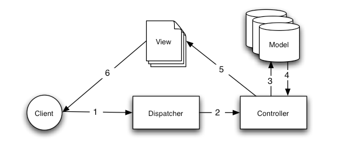

Improve this Doc
理解模型-视图-控制器(MVC)¶
CakePHP 遵循 MVC 软件设 计模式。使用 MVC 编程将应用程序分为三个部分:
模型层¶
模型层表示你的应用程序中实现业务逻辑的部分。负责检索数据，并把它转换成对应用程序 有意义的概念。这包括处理，验证，关联或其他与处理数据有关的任务。
初看起来，模型对象可看作是与你的应用程序可能会使用的数据库进行交互的第一层，但通 常而言，他们是用来实现应用程序的主要概念。
在一个社交网络中，模型层将会负责这样的任务，比如，保存用户数据，保存朋友关系，存 储和检索用户的照片，寻找新朋友的建议，等等。模型对象可以认为是“朋友”、“用户”、 “评论”或“相片”。
视图层¶
视图层将模型化的数据渲染为某种表现形式。它和模型对象是分开的，负责用它得到的信息 生成应用程序需要的任何表现界面。
例如，在模型层返回一组数据之后，视图将使用这些数据来渲染一个包含这些数据的 HTML 页面，或一个 XML 格式的结果以供调用。
视图层并非只限于 HTML 或文本格式的数据表现形式，它可以根据需要生成多种多样的格式， 比如视频、音乐、文档或其它任何你能想到的格式。
控制器层¶
控制器层处理来自用户的请求。它负责借助模型层和视图层，渲染生成响应。
控制器可以被看作是一个管理者，负责将完成任务所需要的所有资源交给正确的执行者们。 它等待来自客户端的请求，根据验证或授权的规则检查其有效性，委派模型获取或处理数据， 并选择客户端能够接受的表现数据类型，最终把渲染过程委派给视图层。
CakePHP请求周期¶

图: 1: CakePHP 中一个典型的 MVC 请求
典型的 CakePHP 请求周期开始于用户请求应用程序中的一个页面或者资源。这个请求首先被 调度器处理，由它选择正确的控制器对象来处理该请求。
一旦这个请求到达了控制器，它会与模型层进行通信，来处理任何需要的读取或者保存数据 的操作。这完成后，控制器将会继续委托正确的视图对象，根据模型所提供的数据生成输出 结果。
最后，当输出生成后，立即渲染给用户。
几乎每一个对应用程序的请求都遵循这样一个基本的模式，之后我们将会添加一些与 CakePHP 有关的细节，所以，在下面的进程中，请记住这一基本模式。
好处¶
为何使用 MVC？因为它是一个久经考验的软件设计模式，可以将一个应用程序转化为可维护、 模块化、快速开发的软件包。将应用程序的任务分割为独立的模型、视图和控制器，使应用 程序很灵活。添加新功能很容易，更新已有的功能也易如反掌。模块化和独立的设计也允许 开发人员和设计人员同时工作，包括快速 制作原型 的能力。这种分离 还允许开发人员改动应用程序的一部分，而不会影响其它的部分。
如果你从来没有这样创建过一个应用程序，你会需要一些时间适应，但我们相信，一旦你用 CakePHP 创建了你的第一个应用程序，你将不会再考虑其他方法。
要开始创建你的第一个 CakePHP 应用程序，不妨 现在就尝试博客教程 。